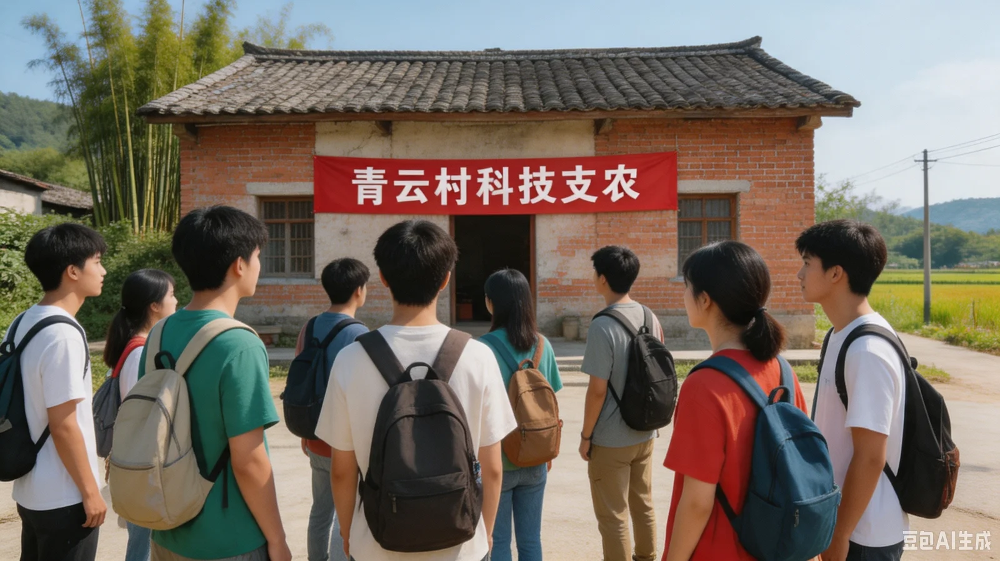

通知 · 2026/07/21
因天气原因，队伍已提前返程。详情见新闻公告。
活动简介
2026 年 7 月 15 日，科联科技支农服务队一行 6 人前往青云村，开展为期 10 天的科技支农实践。活动内容包括：农用设备检修与维护培训、村小学科普课堂、智慧农业示范点调研、村庄信息化需求走访等。这是科联第一次与禾丰智慧农业科技有限公司开展联合实践。
出发前，学院组织安全培训并发放了物资。队伍原定于 7 月 25 日返程。
队员名单
队长：陈曦（硬件部）
队员：TIU 等 5 人
（名单以秘书处 7 月 10 日归档为准）
活动照片
已上传部分照片，点击可放大查看。
行程安排
原定行程表（7 月 10 日发布）
| 日期 | 安排 |
|---|---|
| 07/15 | 出发 · 抵达青云村 · 安顿物资 |
| 07/16—07/18 | 农用设备检修培训 · 村小学科普课堂 |
| 07/19 | 入户走访（村西片区） |
| 07/20 | 智慧农业示范点参观调研 |
| 07/21 | 休整 · 返程准备 |
| 07/22—07/25 | 返程 · 活动总结 |

（本页照片更新至 07-19。行程表为出发前计划，更多实况记录待归档。）